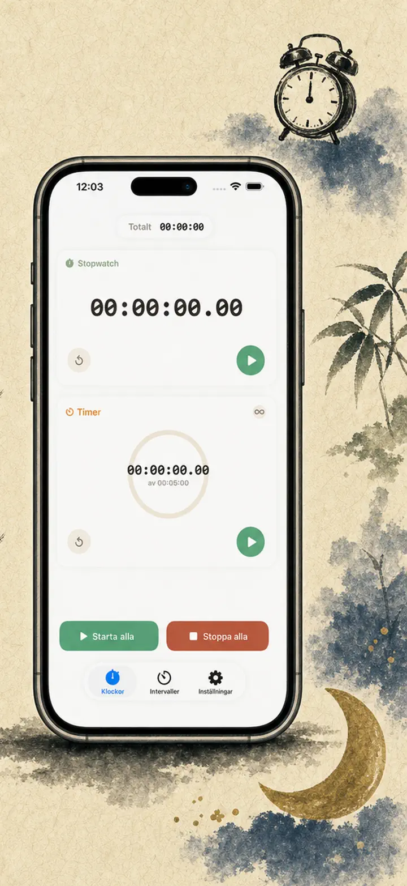
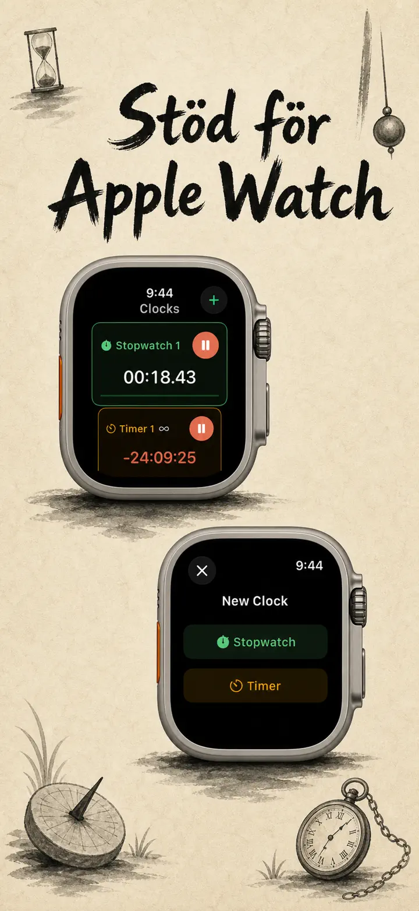
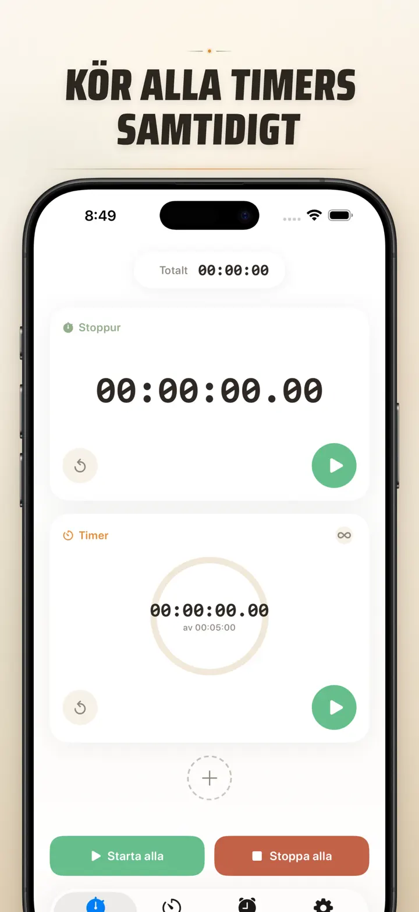
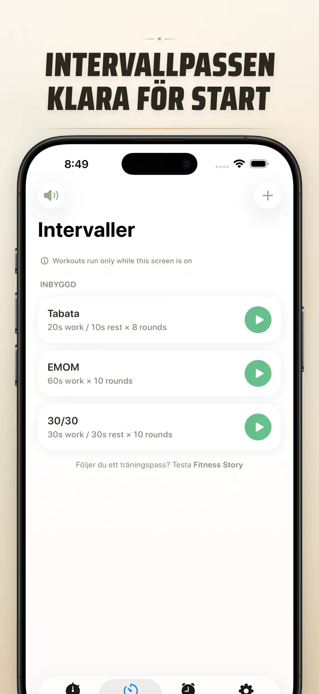
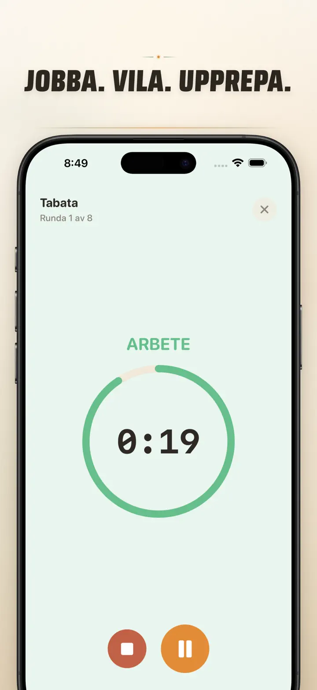
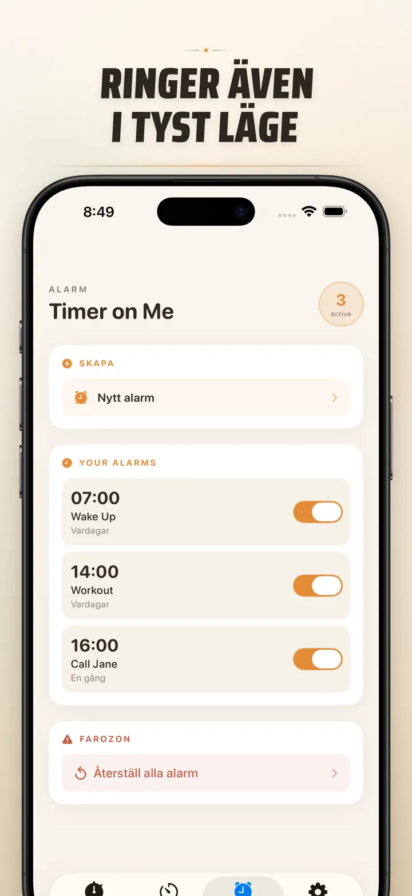

Timer on Me
Timer, alarm, stoppur, HIIT
Nu med datumalarm: ställ in ett engångslarm för valfritt framtida datum & tid, bredvid återkommande larm, 50 timers samtidigt, HIIT & Tabata och Apple Watch.
Hämta i App StoreOm appen
Timer on Me är din multi-timer och stoppur för iPhone, iPad och Apple Watch. Upp till 50 oberoende timers samtidigt, exakta intervallpass och larm som faktiskt ringer — även med låst iPhone eller stängd app.
ALARM
- Väck- och påminnelsealarm med egna etiketter och veckodagsscheman
- Drivs av AlarmKit — ringer även när iPhone är låst eller Timer on Me är stängd
- Konfigurerbar snooze (3 / 5 / 9 / 15 / 30 minuter) eller ingen snooze
- Välj bland inbyggda ringsignaler eller importera egna ljud
- Aktivera och stäng av med ett tryck från den dedikerade Alarm-fliken
TRÄNING OCH INTERVALLER
- Färdiga Tabata-, EMOM- och 30/30-presets — två tryck och du kör
- Egen intervalleditor: arbete, vila och rundor i minuter och sekunder
- Fullskärms träningsläge med färgbyte per fas och tyst-alternativ
- Pausa, hoppa över och fortsätt mitt i passet utan att tappa framsteg
APPLE WATCH
- Riktig nativ watchOS-app, inte bara en spegling av telefonen
- Flera stoppur och timers på handleden samtidigt
- Stoppur med hundradels sekunds precision
- Egna urtavlekomplikationer för ett-tryck-start
- Fungerar fristående, även utan iPhone i närheten
50 TIMERS SAMTIDIGT
- Upp till 50 oberoende timers och stoppur i en och samma session
- Starta, stoppa och nollställ enskilt eller i grupp
- Auto-repetition för cykliska rundor
- Timers fortsätter förbi noll för att fånga övertid
- Färgkodade framstegsfält: gult vid 50 %, rött vid 10 %
- Dra för att sortera, ge dina egna namn
PÅLITLIGA LARM
- AlarmKit: larmet ringer även när iPhone är låst eller appen stängd
- Dynamic Island och Live Activity — se framsteget på en sekund
- Hemskärmswidgets: liten, mellan, stor
- Inbyggda toner: klockor, fågelsång, vintage-telefoner
- Tryck för att förhandslyssna innan du väljer
- "Håll skärmen vaken"-läge för långa pass
ANPASSA OCH DELA
- Visa eller dölj decimaler, totaler och procent
- Spara och skriv över presets, ta fram dem med ett tryck
- Exportera som CSV, JSON eller ren text
- Dela med kollegor, elever eller din tränare
FÖR iPhone, iPad OCH APPLE WATCH
- Layout som anpassar sig till alla skärmstorlekar
- Split View på iPad
- 34 språk
PERFEKT FÖR
- HIIT, Tabata, CrossFit och cirkelträning
- Boxningsrundor, kickboxning och kampsport
- Pomodoro, plugg inför högskoleprovet och fokus
- Fika, bryggkaffe, te, ägg, köttbullar och ugnstider
- Yoga, pilates, meditation och andningsövningar
- Presentationsrep och instrumentövning
- Lektioner, workshops och gruppaktiviteter
- Brädspel och hemmakvällar
Ladda ner Timer on Me och ta kontroll över varje minut — på gymmet, jobbet eller hemma.
Integritetspolicy: https://masawata.net/privacy-policy.html Användarvillkor: https://www.apple.com/legal/internet-services/itunes/dev/stdeula/
Skärmavbilder






Timer on Me
Nu med datumalarm: ställ in ett engångslarm för valfritt framtida datum & tid, bredvid återkommande larm, 50 timers samtidigt, HIIT & Tabata och Apple Watch.
Hämta i App Store